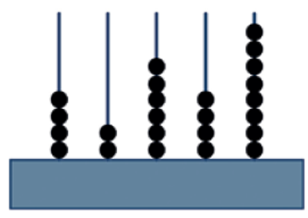

Qual é o número formado pela adição abaixo?
4000 + 300 + 20 + 1
O número 30 456 é igual a
A professora de João pediu para ele decompor um número e ele fez da seguinte forma:
4 x 1000 + 3 x 10 + 5 x 1
Qual foi o número pedido?
Um garoto completou 1960 bolinhas de gude em sua coleção. Esse número é composto por
O número total de ônibus que circulam em uma cidade é formado por 2 unidades de milhar, 84 dezenas e 6 unidades simples. Quantos ônibus circulam, ao todo, nessa cidade?
A população de Vila Isabel, bairro da zona norte da cidade do Rio de Janeiro, onde nasceu o poeta Noel Rosa, é, aproximadamente, de 82 000 pessoas. O número 82 000, decomposto em diferentes ordens, fica
Tem-se o número 8.567. O valor relativo do algarismo 5 é
Fazendo a decomposição do número 572, temos:
Na aula de matemática Ender escreveu no quadro a sentença 300 + X + 7 = 387
Ao observar com atenção, os seus colegas disseram:
- O número que deveria ficar no lugar do X é o 70, disse Julliany.
- Nada disso, o número tem que ser o 80, rebateu Diego.
- Que nada! Tem que ser 90, falou João.
- Ha ha ha! Não é nada disso, o número tem que ser o 87. Disse Mayara.
Qual dos alunos acertou a resposta?
O homem antigo inventou um instrumento para contar e fazer cálculos chamado ábaco. Dentre vários tipos de ábaco, um deles é composto de hastes verticais em que são encaixados pequenos anéis. O valor de cada anel muda de acordo com a posição da haste na qual será colocado. A haste na 1ª posição à direita representa a casa das unidades; na 2ª, a das dezenas; na 3ª, a das centenas, e assim por diante.

O número representado no ábaco da figura anterior é: